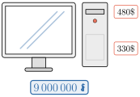

- កំណត់ទំហំពីរសមាមាត្រគ្នា
- ដោះស្រាយចំណោទដែលទាក់ទងនឹងសមាមាត្រ
- ដោះស្រាយចំណោទដែលទាក់ទងនឹងភាគរយនិងកិច្ចការជំនួញ ។
1. ទំហំសមាមាត្រ
1.1. ទំហំសមាមាត្រស្រប
ឧទាហរណ៍ ៖ គេប្រើជញ្ជីងដែកក្នុងការថ្លឹងម៉ាស គេទទួលបានលទ្ធផលដូចតារាងខាងក្រោម៖
| ម៉ាស \(\displaystyle x\) គិតជាក្រាម (g) | 50 | 100 | 150 | 250 | … |
| ប្រវែងរ៉ឺស័រលូត \(\displaystyle y\) គិតជាមីលីម៉ែត្រ (mm) | 10 | 20 | 30 | 50 | … |
តាមតារាងខាងលើគេសង្កេតឃើញថា កាលណាម៉ាសកាន់តែធំ នោះរ៉ឺស័រលូតបានកាន់តែវែងទៅតាមចំនួនដងនៃម៉ាស ។
គេកត់សម្គាល់ឃើញថា \(\displaystyle \frac{y}{x} = \frac{10}{50} = \frac{20}{100} = \frac{30}{150} = \dots = 0.2\)
គេអាចបកស្រាយទំនាក់ទំនងរវាងទំហំ \(\displaystyle x\) និង \(\displaystyle y\) ដោយខ្លី \(\displaystyle \frac{y}{x} = 0.2\) ឬ \(\displaystyle y = 0.2x\) ។
គេថា \(\displaystyle x\) និង \(\displaystyle y\) ជាទំហំសមាមាត្រស្របនិង \(\displaystyle 0.2\) ជាមេគុណសមាមាត្រ ។
\(\displaystyle y\) និង \(\displaystyle x\) ជាទំហំសមាមាត្រស្របនិង \(\displaystyle a \ne 0\) ជាមេគុណសមាមាត្រនោះ
ក្នុងបណ្ណាល័យមួយ ពិន័យអ្នកដែលបានខ្ចីសៀវភៅអានពីបណ្ណាល័យ ហើយបានសងសៀវភៅវិញហួសកំណត់មួយថ្ងៃនឹងត្រូវពិន័យប្រាក់ \(\displaystyle 100\text{ ៛}\) ។ សរសេរទំនាក់ទំនងរវាងទំហំទាំងពីរនេះ ។
តាង \(\displaystyle x\) ជាចំនួនថ្ងៃដែលបានខ្ចីសៀវភៅហួសកំណត់
តាង \(\displaystyle y\) ជាប្រាក់ដែលត្រូវបានពិន័យ ។ ប្រាក់ពិន័យនឹងកើនទៅតាមចំនួនដងនៃថ្ងៃដែលបានហួសកំណត់ វាជាទំហំសមាមាត្រស្របកំណត់ដោយ \(\displaystyle y = 100x\) ។
យន្តហោះមួយគ្រឿងហោះក្នុងល្បឿន \(\displaystyle 800\text{ km/h}\) ។ កំណត់ចម្ងាយចរនៅពេលដែលវាចរអស់រយៈពេល 8 ម៉ោង ។
មើលចម្លើយ
\(\displaystyle 6400\text{ km}\) ។
1.2. លក្ខណៈនៃសមាមាត្រស្រប
លក្ខណៈទី 1 ៖ យើងពិនិត្យតម្លៃសមាមាត្រនៃ \(\displaystyle y\) និង \(\displaystyle x\) ដែលមានមេគុណសមាមាត្រ \(\displaystyle a \ne 0\) ។ បើ \(\displaystyle x_1\) និង \(\displaystyle x_2\) ជាតម្លៃពីរផ្សេងគ្នានៃ \(\displaystyle x\) និង \(\displaystyle y_1\) និង \(\displaystyle y_2\) ជាតម្លៃត្រូវគ្នានៃ \(\displaystyle y\) យើងបាន \(\displaystyle y_1 = ax_1\) និង \(\displaystyle y_2 = ax_2\)
\(\displaystyle \frac{y_1}{x_1} = a\) និង \(\displaystyle \frac{y_2}{x_2} = a\) ដូចនេះ \(\displaystyle \frac{y_1}{x_1} = \frac{y_2}{x_2}\) ឬ \(\displaystyle \frac{x_1}{x_2} = \frac{y_1}{y_2}\) ជាសមាមាត្រ ហើយ \(\displaystyle x_1\) និង \(\displaystyle x_2\), \(\displaystyle y_1\) និង \(\displaystyle y_2\) ហៅថាគូនៃសមាមាត្រ ។
ក្នុងសមាមាត្រ \(\displaystyle \frac{y_1}{x_1} = \frac{y_2}{x_2}\), \(\displaystyle y_1\) និង \(\displaystyle x_2\) ហៅថាតួចុងនិង \(\displaystyle x_1\) និង \(\displaystyle y_2\) ហៅថាតួមធ្យម ។
បើយើងគុណអង្គទាំងពីរនៃសមាមាត្រ \(\displaystyle \frac{y_1}{x_1} = \frac{y_2}{x_2}\) នឹង \(\displaystyle x_1 x_2\) យើងបាន
\(\displaystyle \frac{y_1}{x_1} \times x_1 x_2 = \frac{y_2}{x_2} \times x_1 x_2\) សមមូលនឹង \(\displaystyle y_1 x_2 = y_2 x_1\) ។
ក្នុងសមាមាត្រ ផលគុណតួចុងស្មើនឹងផលគុណតួមធ្យម
រូបខាងក្រោមជាចតុកោណកែងបីដែលមានប្រវែងបណ្តោយសមាមាត្រនឹងប្រវែងទទឹង ។ វិមាត្រទាំងអស់គិតជាសង់ទីម៉ែត្រ (cm) ។
- ក. រកប្រវែងបណ្តោយនៃរូបទី 2
- ខ. រកប្រវែងទទឹងនៃរូបទី 3 ។
ផលធៀបប្រវែងបណ្តោយនិងប្រវែងទទឹងនៃរូបទី 1 គឺ \(\displaystyle \frac{3}{2}\)
- ក.
ចំពោះរូបទី 2 ៖ ដោយរូបទី 2 សមាមាត្រនឹងរូបទី 1 គេបាន \(\displaystyle \frac{3}{2} = \frac{x}{8}\) នោះ \(\displaystyle x = \frac{3}{2} \times 8 = 12\)
ដូចនេះបណ្តោយនៃរូបទី 2 មានប្រវែង \(\displaystyle 12\text{ cm}\) ។
- ខ.
ចំពោះរូបទី 3 ៖ ដោយរូបទី 3 សមាមាត្រនឹងរូបទី 1 គេបាន \(\displaystyle \frac{3}{2} = \frac{15}{y}\) នោះ \(\displaystyle y = \frac{2}{3} \times 15 = 10\)
ដូចនេះទទឹងនៃរូបទី 3 មានប្រវែង \(\displaystyle 10\text{ cm}\) ។
ថ្លៃក្រូចសមាមាត្រនឹងចំនួនផ្លែក្រូច ។ បើក្រូច 9 ផ្លែ ថ្លៃ \(\displaystyle 1\,200\text{ ៛}\) ។
- ក. រកថ្លៃក្រូច 12 ផ្លែ ។
- ខ. រកចំនួនផ្លែក្រូចដែលថ្លៃ \(\displaystyle 32\,000\text{ ៛}\) ។
មើលចម្លើយ
ក. \(\displaystyle 1\,600\text{ ៛}\) ខ. \(\displaystyle 240\text{ ផ្លែ}\) ។
លក្ខណៈទី 2 ៖ បើ \(\displaystyle y_1 = ax_1\) និង \(\displaystyle y_2 = ax_2\) ដែល \(\displaystyle a \ne 0\)
យើងបាន \(\displaystyle \frac{y_1 + y_2}{x_1 + x_2} = \frac{ax_1 + ax_2}{x_1 + x_2} = \frac{a(x_1 + x_2)}{x_1 + x_2} = a\)
តែ \(\displaystyle \frac{y_1}{x_1} = \frac{y_2}{x_2} = a\) នោះ \(\displaystyle \frac{y_1}{x_1} = \frac{y_2}{x_2} = \frac{y_1 + y_2}{x_1 + x_2}\) ។
\(\displaystyle x_1\) និង \(\displaystyle x_2\) ជាពីរចំនួនខុសពីសូន្យដែល \(\displaystyle x_1 + x_2 \ne 0\) ។
\[\text{បើ } \frac{y_1}{x_1} = \frac{y_2}{x_2} \text{ នោះ } \frac{y_1}{x_1} = \frac{y_2}{x_2} = \frac{y_1 + y_2}{x_1 + x_2}\]ដូចគ្នាដែរ \(\displaystyle x_1, x_2, x_3\) ជាបីចំនួនខុសពីសូន្យដែល \(\displaystyle x_1 + x_2 + x_3 \ne 0\)
\[\text{បើ } \frac{y_1}{x_1} = \frac{y_2}{x_2} = \frac{y_3}{x_3} \text{ នោះ } \frac{y_1}{x_1} = \frac{y_2}{x_2} = \frac{y_3}{x_3} = \frac{y_1 + y_2 + y_3}{x_1 + x_2 + x_3} \text{ ។}\]
កាកបាទក្រហមបានផ្តល់អង្ករ \(\displaystyle 320\text{ kg}\) ឱ្យប្រជាជនបីគ្រួសាររងគ្រោះដោយទឹកជំនន់ ដែលគ្រួសារនីមួយៗមានសមាជិក 4 នាក់ 5 នាក់ និង 7 នាក់ ។ គេដឹងថាមនុស្សម្នាក់ៗទទួលបានអង្ករបរិមាណស្មើគ្នាហើយចំណែកនៃគ្រួសារនីមួយៗសមាមាត្រនឹងចំនួនសមាជិកនៅក្នុងគ្រួសារ ។ រកចំណែកអង្ករដែលគ្រួសារនីមួយៗទទួលបាន ។
តាង \(\displaystyle a, b\) និង \(\displaystyle c\) ជាចំណែករៀងគ្នានៃគ្រួសារនីមួយៗ ។ ដោយចំណែកគ្រួសារនីមួយៗសមាមាត្រនឹងចំនួនសមាជិកនៅក្នុងគ្រួសារ យើងបាន
តាមលក្ខណៈសមាមាត្រ យើងបាន
យើងទាញបាន
ដូចនេះចំណែកនៃគ្រួសារនីមួយៗ គឺ \(\displaystyle 80\text{ kg}\), \(\displaystyle 100\text{ kg}\) និង \(\displaystyle 140\text{ kg}\) ។
បុរសម្នាក់បានចែកប្រាក់ \(\displaystyle 140\,000\text{ ៛}\) ឱ្យកូនបីនាក់មានអាយុ 7 ឆ្នាំ 10 ឆ្នាំ និង 11 ឆ្នាំ ។ គេដឹងថាចំណែកនៃកូនម្នាក់ៗសមាមាត្រនឹងអាយុរបស់ពួកគេ ។ រកចំណែកប្រាក់ដែលកូនម្នាក់ៗទទួលបាន ។
មើលចម្លើយ
\(\displaystyle 35\,000\text{ ៛}, 50\,000\text{ ៛}, 55\,000\text{ ៛}\) ។
1.3. ទំហំសមាមាត្រច្រាស
ឧទាហរណ៍ ៖ គេចង់បានដីមួយកន្លែងរាងចតុកោណកែងដែលមានផ្ទៃក្រឡា \(\displaystyle 36\text{ m}^2\) ។ គេមានជម្រើសច្រើនក្នុងការកំណត់ទទឹងនិងបណ្តោយនៃចតុកោណកែងដូចតារាងខាងក្រោម៖
| ប្រវែងទទឹង \(\displaystyle x\) គិតជាម៉ែត្រ (m) | 1 | 2 | 3 | 4 | 6 |
| ប្រវែងបណ្តោយ \(\displaystyle y\) គិតជាម៉ែត្រ (m) | 36 | 18 | 12 | 9 | 6 |
យើងសង្កេតលើតារាងឃើញថា កាលណាតម្លៃ \(\displaystyle x\) កើន តម្លៃ \(\displaystyle y\) ថយចុះ ឬតម្លៃ \(\displaystyle x\) ថយចុះ នោះតម្លៃ \(\displaystyle y\) កើន ហើយផលគុណតម្លៃទាំងពីរគឺ
យើងអាចបកស្រាយទំនាក់ទំនង \(\displaystyle x\) និង \(\displaystyle y\) ដោយខ្លី \(\displaystyle xy = 36\) ឬ \(\displaystyle y = \frac{36}{x}\) ។
គេថាប្រវែងទទឹង \(\displaystyle x\text{ (m)}\) និងបណ្តោយ \(\displaystyle y\text{ (m)}\) ជាទំហំសមាមាត្រច្រាសហើយ 36 ជាមេគុណសមាមាត្រច្រាស ។
បើ \(\displaystyle y\) និង \(\displaystyle x\) ជាទំហំសមាមាត្រច្រាសនិង \(\displaystyle a \ne 0\) ជាមេគុណសមាមាត្រច្រាសនោះ
កម្មករ 35 នាក់សង់ផ្ទះមួយហើយក្នុងរយៈពេល 16 ថ្ងៃ ។ តើកម្មករ 28 នាក់សង់ផ្ទះនោះហើយក្នុងរយៈពេលប៉ុន្មានថ្ងៃ ?
តាង \(\displaystyle x\) ជាចំនួនថ្ងៃដែលកម្មករ 28 នាក់សង់ផ្ទះនោះហើយ
| ចំនួនកម្មករ | 35 | 28 |
| ចំនួនថ្ងៃ | 16 | \(\displaystyle x\) |
ចំនួនកម្មករនិងចំនួនថ្ងៃជាទំហំសមាមាត្រច្រាស យើងបាន
ដូចនេះកម្មករ 28 នាក់សង់ផ្ទះនោះហើយក្នុងរយៈពេល 20 ថ្ងៃ ។
គេបញ្ចូលទឹកដាក់ក្នុងអាងមួយដោយប្រើប៊ីដុង 4 ចំណាយពេលអស់ \(\displaystyle 70\text{ mn}\) ទើបពេញអាង ។ បើគេប្រើប៊ីដុង 7 តើត្រូវចំណាយពេលអស់ប៉ុន្មាន ទើបបញ្ចូលទឹកពេញអាងនោះ ?
មើលចម្លើយ
\(\displaystyle 40\text{ mn}\) ។
2. ភាគរយ
2.1. ការសរសេរបរិមាណមួយជាភាគរយនៃបរិមាណមួយទៀត
ឧទាហរណ៍ ៖ សរសេរ \(\displaystyle 45\text{ m}\) ជាភាគរយនៃ \(\displaystyle 1\text{ km}\) ។
ដំបូងសរសេរប្រភាគ \(\displaystyle \frac{45}{1000}\) (ដោយ \(\displaystyle 1\text{ km} = 1000\text{ m}\))
ប្តូរប្រភាគទៅជាភាគរយ \(\displaystyle = \frac{45}{1000} \times 100\% = 4.5\%\) ។
ដូចនេះ \(\displaystyle 45\text{ m}\) ជាភាគរយនៃ \(\displaystyle 1\text{ km}\) គឺ \(\displaystyle 4.5\%\) ។
ដើម្បីសរសេរបរិមាណ \(\displaystyle a\) មួយជាភាគរយនៃបរិមាណ \(\displaystyle b\) មួយទៀត គេត្រូវសរសេរ \(\displaystyle a\) ជាប្រភាគនៃ \(\displaystyle b\) មានន័យថា \(\displaystyle \frac{a}{b}\) គុណប្រភាគ \(\displaystyle \frac{a}{b}\) នឹង \(\displaystyle 100\%\) ។
ការធ្វើតេស្តសិស្ស 40 នាក់ ជាប់បាន 30 នាក់ ។ តើសិស្សដែលបានធ្វើតេស្តជាប់មានប៉ុន្មានភាគរយ ?
ភាគរយនៃសិស្សដែលបានធ្វើតេស្តជាប់គឺ \(\displaystyle \frac{30}{40} \times 100\% = 75\%\) ។
សិស្សម្នាក់ទទួលបាន 95 ពិន្ទុក្នុង 100 ពិន្ទុលើមុខវិជ្ជាគណិតវិទ្យានិង 92 ពិន្ទុក្នុង 100 ពិន្ទុលើមុខវិជ្ជាភាសាខ្មែរ ។ រកពិន្ទុដែលទទួលបានជាភាគរយលើមុខវិជ្ជានីមួយៗ ។
មើលចម្លើយ
\(\displaystyle 95\%, 92\%\) ។
2.2. ភាគរយនៃប្រាក់ចំណេញនិងប្រាក់ខាត
ភាគរយនៃប្រាក់ចំណេញ ឬប្រាក់ខាតធៀបនឹងប្រាក់ថ្លៃដើមកំណត់ដូចខាងក្រោម ៖
នៅក្នុងក្រុមហ៊ុននាំចូលនៃរថយន្តមួយគេដឹងថាថ្លៃដើមទិញចូលមួយគ្រឿងគឺ \(\displaystyle 75\,000\$\) ។ ក្រុមហ៊ុនបានលក់រថយន្តមួយគ្រឿងឱ្យលោកស្រីស៊ុនថ្លៃ \(\displaystyle 84\,000\$\) ។ ពីរឆ្នាំក្រោយមកលោកស្រីស៊ុនបានលក់រថយន្តនេះឱ្យលោកហេងលីម ថ្លៃ \(\displaystyle 60\,000\$\) ។
- ក. រកភាគរយប្រាក់ចំណេញដែលក្រុមហ៊ុនទទួលបានពីការលក់រថយន្តឱ្យលោកស្រីស៊ុន ។
- ខ. រកភាគរយប្រាក់ខាតដែលលោកស្រីស៊ុនបានខាតពីការលក់រថយន្តឱ្យលោកហេងលីម ។
- ក.
ប្រាក់ថ្លៃដើមនៃរថយន្ត \(\displaystyle = 75\,000\$\)
ប្រាក់ចំណេញសម្រាប់ក្រុមហ៊ុន \(\displaystyle 84\,000\$ - 75\,000\$ = 9\,000\$\)
ភាគរយប្រាក់ចំណេញសម្រាប់ក្រុមហ៊ុន \(\displaystyle = \frac{9\,000\$}{75\,000\$} \times 100\% = 12\%\)
ដូចនេះ ក្រុមហ៊ុនចំណេញប្រាក់បាន \(\displaystyle 12\%\) ។
- ខ.
លោកស្រីស៊ុនបានចំណាយសម្រាប់ប្រាក់ទិញរថយន្តស្មើនឹង \(\displaystyle 84\,000\$\)
ចំនួនប្រាក់ដែលបានខាតនៅពេលដែលគាត់បានលក់រថយន្ត
\[84\,000\$ - 60\,000\$ = 24\,000\$\]ភាគរយប្រាក់ខាតដែលលោកស្រីស៊ុនបានខាតពីការលក់រថយន្ត
\[\frac{24\,000\$}{84\,000\$} \times 100\% = 28.57\%\]ដូចនេះ នៅពេលលោកស្រីស៊ុនបានលក់រថយន្តឱ្យលោកហេងលីមគាត់បានខាតអស់ \(\displaystyle 28.57\%\) ។
ពូសុខបានទិញចម្ការក្រូចមួយកន្លែងថ្លៃ \(\displaystyle 2\,240\,000\text{ ៛}\) ។ បីឆ្នាំក្រោយមកគាត់បានលក់វាចេញវិញខាតអស់ \(\displaystyle 22\%\) ។ តើចម្ការក្រូចនោះ គាត់បានលក់ចេញវិញថ្លៃប៉ុន្មាន?
មើលចម្លើយ
\(\displaystyle 1\,747\,200\text{ ៛}\) ។
2.3. ការបញ្ចុះតម្លៃ
ឧទាហរណ៍ ៖ នៅពេលដែលរបស់មួយត្រូវបានកាត់ក្នុងតម្លៃមួយទាបជាងថ្លៃលក់ខាងដើមនោះ ភាពខុសគ្នានេះហៅថា ការបញ្ចុះតម្លៃ ។
ភាគរយនៃការបញ្ចុះតម្លៃធៀបនឹងតម្លៃខាងដើមកំណត់ដូចខាងក្រោម ៖
គេដឹងថាតម្លៃលក់ខាងដើមនៃកាបូបដៃមួយថ្លៃ \(\displaystyle 32\,000\text{ ៛}\) និងសម្លៀកបំពាក់មួយកំប្លេថ្លៃ \(\displaystyle 36\,000\text{ ៛}\) ។ នៅពេលដំណាច់ឆ្នាំ គេលក់កាបូបដៃមួយថ្លៃតែ \(\displaystyle 25\,600\text{ ៛}\) និងលក់សម្លៀកបំពាក់មួយកំប្លេបញ្ចុះថ្លៃ \(\displaystyle 30\%\) ។
- ក. រកភាគរយនៃការបញ្ចុះតម្លៃកាបូបដៃមួយក្នុងអំឡុងពេលលក់នោះ ។
- ខ. រកថ្លៃលក់សម្លៀកបំពាក់មួយកំប្លេក្នុងអំឡុងពេលលក់នោះ ។
- ក.
តម្លៃលក់ខាងដើមនៃកាបូបដៃមួយថ្លៃ \(\displaystyle 32\,000\text{ ៛}\)
ថ្លៃលក់កាបូបដៃមួយស្មើនឹង \(\displaystyle 25\,600\text{ ៛}\)
ការបញ្ចុះតម្លៃ \(\displaystyle = 32\,000\text{ ៛} - 25\,600\text{ ៛} = 6\,400\text{ ៛}\)
ភាគរយការបញ្ចុះតម្លៃ \(\displaystyle = \frac{6\,400\text{ ៛}\rule[-0.5em]{0pt}{1.55em}}{32\,000\text{ ៛}\rule[-0.5em]{0pt}{1.55em}} \times 100\% = 20\%\)
ដូចនេះពេលដំណាច់ឆ្នាំកាបូបដៃមួយត្រូវបានគេលក់បញ្ចុះថ្លៃ \(\displaystyle 20\%\) ។
- ខ.
តម្លៃលក់ខាងដើមនៃសម្លៀកបំពាក់មួយកំប្លេថ្លៃ \(\displaystyle 36\,000\text{ ៛}\)
ការបញ្ចុះថ្លៃ \(\displaystyle 30\%\) នៃ \(\displaystyle 36\,000\text{ ៛} = \frac{30}{100} \times 36\,000\text{ ៛} = 10\,800\text{ ៛}\)
ថ្លៃលក់សម្លៀកបំពាក់មួយកំប្លេ \(\displaystyle = 36\,000\text{ ៛} - 10\,800\text{ ៛} = 25\,200\text{ ៛}\) ។
ដូចនេះសម្លៀកបំពាក់មួយកំប្លេត្រូវបានលក់តម្លៃ \(\displaystyle 25\,200\text{ ៛}\) ។
មីងសារីបានទិញចានច្រៀងដៃចំនួន 300 ដែលចានច្រៀងនីមួយៗ ថ្លៃ \(\displaystyle 3\,300\text{ ៛}\) ។ គាត់បានលក់វិញនៅដើមដំបូងអស់ចានច្រៀងចំនួន 200 ដែលចានច្រៀងមួយៗ ថ្លៃ \(\displaystyle 3\,980\text{ ៛}\) ហើយនៅសល់ពីនេះគាត់លក់បញ្ចុះតម្លៃ \(\displaystyle 15\%\) ។ រកភាគរយប្រាក់ចំណេញរបស់គាត់ ។
មើលចម្លើយ
\(\displaystyle 14.57\%\) ។
2.4. ការប្រែប្រួលភាគរយ
ឧទាហរណ៍ ៖ បើគេនិយាយថាប្រាក់ខែនៃកម្មករម្នាក់កើនបាន \(\displaystyle 15\%\) មានន័យថារាល់ប្រាក់ \(\displaystyle 100\text{ ៛}\) នៅក្នុងប្រាក់ខែដើមកើនបាន \(\displaystyle 15\text{ ៛}\) បានសេចក្តីថាក្នុងប្រាក់ \(\displaystyle 100\text{ ៛}\) នៅក្នុងប្រាក់ខែដើមទៅជា \(\displaystyle 115\text{ ៛}\) នៅក្នុងប្រាក់ខែថ្មី ។
ឧបមាថាប្រាក់ខែដើមរបស់កម្មករម្នាក់គឺ \(\displaystyle 320\,000\text{ ៛}\) ។ តើប្រាក់ខែថ្មីរបស់គាត់ទទួលបានប៉ុន្មានបន្ទាប់ពីកើនបាន \(\displaystyle 15\%\) ?
ម្យ៉ាងទៀតបើគេនិយាយថាប្រាក់ខែថយចុះ \(\displaystyle 5\%\) មានន័យថារាល់ប្រាក់ \(\displaystyle 100\text{ ៛}\) នៅក្នុងប្រាក់ខែដើមថយចុះអស់ \(\displaystyle 5\text{ ៛}\) បានសេចក្តីថាក្នុង \(\displaystyle 100\text{ ៛}\) នៅក្នុងប្រាក់ខែដើមទៅជា \(\displaystyle 95\text{ ៛}\) នៅក្នុងប្រាក់ខែថ្មី ។ នៅក្នុងឧទាហរណ៍ខាងលើ គេបាន
កម្មករនៃក្រុមហ៊ុនអគ្គិសនីមួយត្រូវបានគេដំឡើង \(\displaystyle 8\%\) នៅក្នុងប្រាក់ខែ ប្រចាំខែរបស់ពួកគេ ។
- ក. លោកប៊ុនថា ទទួលបានប្រាក់ខែដើម \(\displaystyle 540\,000\text{ ៛}\) ក្នុងមួយខែ ។ រកប្រាក់ប្រចាំខែរបស់គាត់បន្ទាប់ពីបានដំឡើង \(\displaystyle 8\%\) មកនោះ ។
- ខ. បើប្រាក់ខែប្រចាំខែរបស់លោកស្រីចាន់ធីទទួលបាន \(\displaystyle 518\,400\text{ ៛}\) បន្ទាប់ពីបានដំឡើងរួច ។ រកប្រាក់ខែដើមប្រចាំខែរបស់គាត់ ។
- ក.
ប្រាក់ខែប្រចាំខែរបស់ប៊ុនថាបន្ទាប់ពីបានដំឡើងគឺ
\[100\% + 8\% = 108\% \text{ នៃប្រាក់ខែដើមប្រចាំខែរបស់គាត់ ។}\]ប្រាក់ប្រចាំខែរបស់គាត់បន្ទាប់ពីបានដំឡើងគឺ
\[108\% \text{ នៃ } 540\,000\text{ ៛} = 108\% \times 540\,000\text{ ៛} = 583\,200\text{ ៛}\] - ខ.
\(\displaystyle \frac{\text{ប្រាក់ខែរបស់លោកស្រីចាន់ធីបន្ទាប់ពីបានដំឡើង}\rule[-0.5em]{0pt}{1.55em}}{\text{ប្រាក់ខែដើមរបស់លោកស្រីចាន់ធី}\rule[-0.5em]{0pt}{1.55em}} = \frac{108}{100}\)
ប្រាក់ខែដើមរបស់លោកស្រីចាន់ធី \(\displaystyle = \frac{100}{108} \times 518\,400\text{ ៛} = 480\,000\text{ ៛}\)
ដូចនេះប្រាក់ខែដើមរបស់លោកស្រីចាន់ធីគឺ \(\displaystyle 480\,000\text{ ៛}\) ។
អាវធំក្រហមមួយគ្រឿងបន្ទាប់ពីបានបញ្ចុះតម្លៃ \(\displaystyle 15\%\) នៅសល់តម្លៃត្រឹមតែ \(\displaystyle 846\,000\text{ ៛}\) ។ តើអាវធំនោះកាលពីដើមមានតម្លៃប៉ុន្មានរៀល ?
មើលចម្លើយ
\(\displaystyle 995\,294.11\text{ ៛}\) ។
2.5. ការប្រាក់សាមញ្ញ
ការប្រាក់ ៖ ជាប្រាក់ចំណេញដែលបានមកពីប្រាក់ឱ្យគេខ្ចីក្នុងរយៈពេលមានកំណត់តាងដោយ \(\displaystyle I\) ។
ប្រាក់ដើម ៖ ជាប្រាក់ខ្ចី ឬឱ្យគេខ្ចីតាងដោយ \(\displaystyle P\) ។
អត្រា ៖ ជាការប្រាក់ក្នុងមួយឆ្នាំលើប្រាក់ដើម 100 ៛ (គិតជាភាគរយ) តាងដោយ \(\displaystyle R\%\) ។
ប្រាក់សរុប ៖ ជាការប្រាក់និងប្រាក់ដើមរួមគ្នា ។
រយៈពេល ៖ ជាអំឡុងពេលដែលបានខ្ចីប្រាក់គេ ឬឱ្យគេខ្ចីតាងដោយ \(\displaystyle T\) ។
គេអាចគិតការប្រាក់ប្រចាំឆមាស ឬប្រចាំត្រីមាស ប្រចាំខែ ឬប្រចាំថ្ងៃ ។ ចំនួននៃការប្រាក់អាស្រ័យលើរយៈពេលដែលបានចែងការ ។
ឧទាហរណ៍ ៖ ពូសំនាងចងការប្រាក់ចំនួន \(\displaystyle 2\,000\,000\text{ ៛}\) ពីធនាគារមួយដោយធនាគារគិតការប្រាក់តាមអត្រា \(\displaystyle 15\%\) ក្នុងមួយឆ្នាំ ។ គណនាការប្រាក់ក្នុងរយៈពេល 3 ឆ្នាំ ។
ប្រាក់ដើមគឺ \(\displaystyle 2\,000\,000\text{ ៛}\)
ការប្រាក់លើប្រាក់ដើម \(\displaystyle 2\,000\,000\text{ ៛}\) សម្រាប់ 1 ឆ្នាំគឺ \(\displaystyle 2\,000\,000\text{ ៛} \times \frac{15}{100} = 300\,000\text{ ៛}\)
ដូចនេះការប្រាក់លើប្រាក់ដើម \(\displaystyle 2\,000\,000\text{ ៛}\) សម្រាប់ 3 ឆ្នាំគឺ \(\displaystyle 300\,000\text{ ៛} \times 3 = 900\,000\text{ ៛}\) ។
តាមឧទាហរណ៍ខាងលើយើងអាចទាញបានថា បើ \(\displaystyle P\) ជាប្រាក់ដើមដែលបានខ្ចីគេ ឬឱ្យគេខ្ចីដោយអត្រាការប្រាក់ \(\displaystyle R\%\) ក្នុងមួយឆ្នាំសម្រាប់រយៈពេល \(\displaystyle T\) ឆ្នាំ នោះការប្រាក់គឺ
មីងចនបានដាក់ប្រាក់ \(\displaystyle 15\,000\,000\text{ ៛}\) នៅក្នុងធនាគារមួយដែលត្រូវទទួលបានអត្រាការប្រាក់ \(\displaystyle 6\%\) ក្នុងមួយឆ្នាំ ។
- ក. តើរយៈពេល 5 ឆ្នាំក្រោយមក គាត់ទទួលបានប្រាក់សរុបចំនួនប៉ុន្មានរៀល? មីងចនបានដកយកការប្រាក់មកប្រើប្រាស់ជារៀងរាល់ចុងឆ្នាំ ។
- ខ. មីងចនបានចងការប្រាក់ \(\displaystyle 15\,000\,000\text{ ៛}\) ឱ្យមីងសានទៀត ។ 2 ឆ្នាំក្រោយមក គាត់ទទួលបានប្រាក់សរុប \(\displaystyle 18\,000\,000\text{ ៛}\) ។ រកអត្រាការប្រាក់ដែលគាត់ទទួលបានពីចងការប្រាក់ឱ្យមីងសាន ។
- ក.
រយៈពេល 5 ឆ្នាំក្រោយមក គាត់ទទួលបានប្រាក់សរុប
\(\displaystyle P = 15\,000\,000\text{ ៛}\), \(\displaystyle R = 6\) និង \(\displaystyle T = 5\text{ ឆ្នាំ}\)
ការប្រាក់ \(\displaystyle I = \frac{PRT}{100} = \frac{15\,000\,000 \times 6 \times 5}{100} = 4\,500\,000\text{ ៛}\)
រយៈពេល 5 ឆ្នាំមីងចនទទួលបានប្រាក់សរុប
\[15\,000\,000 + 4\,500\,000 = 19\,500\,000\text{ ៛} \text{ ។}\] - ខ.
ចំនួនប្រាក់សរុប \(\displaystyle 18\,000\,000\text{ ៛}\)
ប្រាក់ដើម \(\displaystyle P = 15\,000\,000\text{ ៛}\)
ការប្រាក់ \(\displaystyle I = 18\,000\,000 - 15\,000\,000 = 3\,000\,000\text{ ៛}\)
រយៈពេល \(\displaystyle T = 2\text{ ឆ្នាំ}\) តាមរូបមន្ត \(\displaystyle I = \frac{PRT}{100}\) នោះ \(\displaystyle R = \frac{100I}{PT}\)
\[R = \frac{100 \times 3\,000\,000}{15\,000\,000 \times 2} = 10\%\]ដូចនេះ មីងចននឹងត្រូវបានទទួលអត្រាការប្រាក់ពីមីងសាន \(\displaystyle 10\%\) ក្នុងមួយឆ្នាំ ។
ចឹកទ្រីបានចងការប្រាក់ \(\displaystyle 24\,000\,000\text{ ៛}\) ពីធនាគារមួយដោយមានអត្រាការប្រាក់ \(\displaystyle 16\%\) ក្នុងមួយឆ្នាំសម្រាប់រយៈពេល 4 ឆ្នាំ ។ ចឹកទ្រីបានបង់ការប្រាក់ឱ្យធនាគារជារៀងរាល់ឆ្នាំ ។
- ក. តើការប្រាក់ដែលត្រូវសងធនាគារទាំងអស់មានចំនួនប៉ុន្មាន ?
- ខ. តើចំនួនប្រាក់សរុបដែលចឹកទ្រីនឹងត្រូវសងធនាគារវិញមានចំនួនប៉ុន្មាននៅពេលគ្រប់ 4 ឆ្នាំ ?
មើលចម្លើយ
ក. \(\displaystyle 15\,360\,000\text{ ៛}\) ខ. \(\displaystyle 39\,360\,000\text{ ៛}\) ។
2.6. ការប្រាក់សមាស
ឧទាហរណ៍ ៖ មីងសៅបានដាក់ប្រាក់ \(\displaystyle 8\,000\,000\text{ ៛}\) ក្នុងគណនីសន្សំនៅក្នុងធនាគារមួយសម្រាប់រយៈពេល 2 ឆ្នាំដោយមានអត្រាការប្រាក់ \(\displaystyle 15\%\) ក្នុងមួយឆ្នាំ ។ ការប្រាក់ដែលផ្តល់ឱ្យគាត់នោះ ត្រូវបានគិតដូចខាងក្រោម៖
ឆ្នាំទី 1 ៖ \(\displaystyle P = 8\,000\,000\text{ ៛}\), \(\displaystyle R = 15\), \(\displaystyle T = 1\text{ ឆ្នាំ}\)
ឆ្នាំទី 2 ៖ \(\displaystyle P = 8\,000\,000\text{ ៛} + 1\,200\,000\text{ ៛} = 9\,200\,000\text{ ៛}\), \(\displaystyle R = 15\), \(\displaystyle T = 1\text{ ឆ្នាំ}\)
ការប្រាក់សរុបសម្រាប់រយៈពេល 2 ឆ្នាំ \(\displaystyle 1\,200\,000 + 1\,380\,000 = 2\,580\,000\text{ ៛}\) ។
ក្នុងការគិតខាងលើនេះ ការប្រាក់ \(\displaystyle 1\,200\,000\text{ ៛}\) ដែលផ្តល់ឱ្យគាត់នៅដំណាច់ឆ្នាំទី 1 ត្រូវបានបន្ថែមទៅលើប្រាក់ដើម \(\displaystyle 8\,000\,000\text{ ៛}\) បានចំនួនប្រាក់សរុប \(\displaystyle 9\,200\,000\text{ ៛}\) ក្លាយទៅជាប្រាក់ដើមសម្រាប់គិតការប្រាក់នៅដំណាច់ឆ្នាំទី 2 ។
ការប្រាក់សរុប \(\displaystyle 2\,580\,000\text{ ៛}\) ហៅថា ការប្រាក់សមាស ហើយប្រាក់ដើម \(\displaystyle 8\,000\,000\text{ ៛}\) ដែលដាក់នៅក្នុងធនាគារ ត្រូវបានបូកបន្ថែមនឹងការប្រាក់សមាសជារៀងរាល់ឆ្នាំសម្រាប់គិតការប្រាក់នៅឆ្នាំបន្តបន្ទាប់ ។
ការប្រាក់សមាស រាល់ដំណាច់ឆ្នាំ គេបន្ថែមលើប្រាក់ដើមនូវការប្រាក់កន្លងទៅ គេក៏បានប្រាក់ដើមថ្មី ហើយឆ្នាំក្រោយគេគិតការប្រាក់លើប្រាក់ដើមថ្មីនេះដោយអត្រាដដែល ។
ប្រាក់បានចងការប្រាក់ \(\displaystyle 3\,000\,000\text{ ៛}\) ឱ្យមីងស្រីសសម្រាប់រយៈពេល 3 ឆ្នាំ ដោយមានការប្រាក់តាមអត្រា \(\displaystyle 20\%\) ។ រកការប្រាក់សមាសដែលប្រាក់ទទួលបាន ។
រកការប្រាក់សមាសលើប្រាក់ \(\displaystyle 7\,500\,000\text{ ៛}\) សម្រាប់រយៈពេល 1 ឆ្នាំដោយមានការប្រាក់តាមអត្រា \(\displaystyle 16\%\) បានបន្ថែមទៅលើប្រាក់ដើមប្រចាំឆមាស ។
ដូចនេះការប្រាក់សរុប \(\displaystyle 600\,000\text{ ៛} + 648\,000\text{ ៛} = 1\,248\,000\text{ ៛}\) ។
រកការប្រាក់សមាសលើប្រាក់ \(\displaystyle 2\,700\,000\text{ ៛}\) សម្រាប់រយៈពេល 2 ឆ្នាំដោយមានការប្រាក់តាមអត្រា \(\displaystyle 20\%\) បានបន្ថែមទៅលើប្រាក់ដើមប្រចាំឆ្នាំ ។
មើលចម្លើយ
\(\displaystyle I = 1\,188\,000\text{ ៛}\) ។
2.7. ការទិញបង់រំលស់
ឧទាហរណ៍ ៖ ខាងក្រោមនេះជាការផ្សាយពាណិជ្ជកម្មសម្រាប់លក់កុំព្យូទ័រមួយគ្រឿង

ចំពោះថ្លៃលក់ ៖ \(\displaystyle 9\,000\,000\text{ ៛}\)
ប្រាក់កក់ ៖ \(\displaystyle 2\,000\,000\text{ ៛}\)
អត្រាការប្រាក់នៅជំពាក់ ៖ \(\displaystyle 14\%\) សម្រាប់ 2 ឆ្នាំ ។
បន្ទាប់ពីបង់ប្រាក់កក់ \(\displaystyle 2\,000\,000\text{ ៛}\) អ្នកអាចយកកុំព្យូទ័រនេះបាន ។ ម្យ៉ាងទៀត អ្នកមិនទាន់ជាម្ចាស់នៃកុំព្យូទ័រនេះទេ ។ អ្នកគ្រាន់តែជាអ្នកជួលប៉ុណ្ណោះ ។ ម្ចាស់កុំព្យូទ័រនឹងត្រូវផ្ទេរកម្មសិទ្ធិជូនអ្នកបន្ទាប់ពីអ្នកបានសងប្រាក់ជំពាក់ \(\displaystyle 7\,000\,000\text{ ៛}\) បូកនឹងការប្រាក់លើប្រាក់ \(\displaystyle 7\,000\,000\text{ ៛}\) សម្រាប់រយៈពេល 2 ឆ្នាំ ដោយអត្រា \(\displaystyle 14\%\) ដោយការសងប្រាក់ប្រចាំខែស្មើៗគ្នា ក្នុងរយៈពេល 24 ខែ ។ ការទិញទំនិញតាមវិធីនេះហៅថាជំនួញការទិញបង់រំលស់ ។ ការសងប្រាក់ប្រចាំខែនីមួយៗត្រូវតែដឹងប្រាក់សងរំលស់ ។
ការប្រាក់ខាងលើគឺ \(\displaystyle \frac{7\,000\,000 \times 14 \times 2}{100} = 1\,960\,000\text{ ៛}\)
ចំនួនប្រាក់សរុបដែលត្រូវសង \(\displaystyle 7\,000\,000\text{ ៛} + 1\,960\,000\text{ ៛} = 8\,960\,000\text{ ៛}\)
ដូចនេះប្រាក់សងរំលស់ប្រចាំខែនីមួយៗ \(\displaystyle \frac{8\,960\,000\text{ ៛}\rule[-0.5em]{0pt}{1.55em}}{24} = 373\,333.33\text{ ៛}\) ។
ម៉ាស៊ីនបោកខោអាវមួយគ្រឿងថ្លៃ \(\displaystyle 1\,350\,000\text{ ៛}\) ។ គេទិញបង់រំលស់ដែលមានប្រាក់កក់ \(\displaystyle 15\%\) អត្រាការប្រាក់ជំពាក់ \(\displaystyle 10\frac{2}{3}\%\) ក្នុងមួយឆ្នាំសម្រាប់ 2 ឆ្នាំ ។ ការសងប្រាក់ត្រូវសងរំលស់ប្រចាំខែ ។
- ក. រកប្រាក់សងរំលស់ប្រចាំខែ ។
- ខ. រកថ្លៃទិញបង់រំលស់ទាំងអស់នៃម៉ាស៊ីនបោកខោអាវ ។
- គ. រកភាគរយនៃប្រាក់ដែលសន្សំបាន បើគេម្នាក់ទិញម៉ាស៊ីនបោកខោអាវនោះដោយសងប្រាក់ \(\displaystyle 1\,350\,000\text{ ៛}\) ភ្លាមៗ ។
ប្រាក់កក់ \(\displaystyle \frac{15}{100} \times 1\,350\,000 = 202\,500\text{ ៛}\)
ចំនួនប្រាក់នៅសល់ \(\displaystyle 1\,350\,000\text{ ៛} - 202\,500\text{ ៛} = 1\,147\,500\text{ ៛}\)
ការប្រាក់លើប្រាក់ \(\displaystyle 1\,147\,500\text{ ៛}\) សម្រាប់ 2 ឆ្នាំ
ចំនួនប្រាក់បន្ថែមសម្រាប់សងរំលស់ក្នុង 24 ខែ
- ក. ប្រាក់សងរំលស់ប្រចាំខែ \(\displaystyle 1\,392\,300 \div 24 = 58\,012.5 \approx 58\,013\text{ ៛}\) ។
- ខ.
ថ្លៃទិញបង់រំលស់ទាំងអស់ = ប្រាក់កក់ + ចំនួនប្រាក់បន្ថែម
\[202\,500\text{ ៛} + 1\,392\,300\text{ ៛} = 1\,594\,800\text{ ៛} \text{ ។}\] - គ.
តាមការព្រមព្រៀងការទិញបង់រំលស់ ចំនួនប្រាក់បន្ថែមដែលគេម្នាក់នឹងត្រូវចំណាយគឺ
\[1\,594\,800\text{ ៛} - 1\,350\,000\text{ ៛} = 244\,800\text{ ៛} \text{ ។}\]ភាគរយនៃប្រាក់ដែលគាត់អាចសន្សំបាននៅពេលសងប្រាក់ភ្លាមៗ
\[\frac{244\,800}{1\,350\,000} \times 100\% = 18.13\% = 18\frac{2}{15}\% \text{ ។}\]
រកចំនួនប្រាក់បន្ថែមដែលអ្នកត្រូវចំណាយតាមវិធីទិញបង់រំលស់និងបង្ហាញចំនួនប្រាក់បន្ថែមជាភាគរយនៃតម្លៃទិញមិនបង់រំលស់នីមួយៗដូចខាងក្រោម ៖
| តម្លៃទិញមិនបង់រំលស់ | ការព្រមព្រៀងគ្នាទិញបង់រំលស់ | |||
| ប្រាក់កក់ | ប្រាក់សងរំលស់ប្រចាំខែ | ចំនួនខែនៃការសងរំលស់ | ||
| ក. | \(\displaystyle 1\,080\,000\text{ ៛}\) | \(\displaystyle 150\,000\text{ ៛}\) | \(\displaystyle 120\,000\text{ ៛}\) | 10 |
| ខ. | \(\displaystyle 2\,700\,000\text{ ៛}\) | \(\displaystyle 450\,000\text{ ៛}\) | \(\displaystyle 225\,000\text{ ៛}\) | 12 |
មើលចម្លើយ
ក. \(\displaystyle 270\,000\text{ ៛}, 25\%\) ខ. \(\displaystyle 450\,000\text{ ៛}, 16.66\%\) ។
លំហាត់
រកតម្លៃ \(\displaystyle x\) ក្នុងករណីនីមួយៗខាងក្រោម៖
- ក. \(\displaystyle 4 : 7 = x : 5\)
- ខ. \(\displaystyle x : 8 = 99 : 5\)
- គ. \(\displaystyle 1\text{ km} : 32\text{ m} = 250\text{ g} : x\text{ g}\) ។
- ក. គេឱ្យ \(\displaystyle a : b = 5 : 18\) និង \(\displaystyle a + b = 138\) រកតម្លៃនៃ \(\displaystyle b\) ។
- ខ. គេឱ្យ \(\displaystyle x : y = 3 : 5\) និង \(\displaystyle x + y = 200\) រកតម្លៃនៃ \(\displaystyle x\) ។
បើ \(\displaystyle a, b, c\) និង \(\displaystyle d\) ជាចំនួនវិជ្ជមាន ។ បង្ហាញលក្ខណៈនៃសមាមាត្រ \(\displaystyle \frac{a}{b} = \frac{c}{d}\) ដូចខាងក្រោម ៖
- ក. \(\displaystyle ad = bc\)
- ខ. \(\displaystyle \frac{a}{c} = \frac{b}{d}\)
- គ. \(\displaystyle \frac{d}{b} = \frac{c}{a}\)
- ឃ. \(\displaystyle \frac{d}{c} = \frac{b}{a}\)
- ង. \(\displaystyle \frac{a+b}{b} = \frac{c+d}{d}\)
- ច. \(\displaystyle \frac{a-b}{b} = \frac{c-d}{d}\)
- ឆ. បើ \(\displaystyle c \ne d\) នោះ \(\displaystyle \frac{a-b}{c-d} = \frac{a}{c}\)
- ជ. បើ \(\displaystyle a \ne b\) និង \(\displaystyle c \ne d\) នោះ \(\displaystyle \frac{a+b}{a-b} = \frac{c+d}{c-d}\) ។
គេឱ្យ \(\displaystyle a : b : c = 6 : 7 : 9\)
- ក. រកតម្លៃនៃ \(\displaystyle a\) និង \(\displaystyle c\) បើ \(\displaystyle b = 21\text{ cm}\)
- ខ. រកតម្លៃនៃ \(\displaystyle a\) និង \(\displaystyle b\) បើ \(\displaystyle c = 720\text{ g}\) ។
- ក. គេឱ្យ \(\displaystyle a : b : c = 7 : 13 : 20\) និង \(\displaystyle a + b + c = 520\) ។ រកតម្លៃនៃ \(\displaystyle a, b\) និង \(\displaystyle c\) ។
- ខ. គេឱ្យ \(\displaystyle x : y : z = 6 : 8 : 15\) និង \(\displaystyle z - y = 98\text{ g}\) ។ រកតម្លៃនៃ \(\displaystyle x, y\) និង \(\displaystyle z\) ។
- គ. គេឱ្យ \(\displaystyle a : b : c = 4 : 6 : 9\) ។ រកតម្លៃនៃ \(\displaystyle a + b + c\) បើ \(\displaystyle b - a = 34\text{ m}\) ។
- ក. រកតម្លៃសៀវភៅសរសេរ 12 ក្បាល បើសៀវភៅសរសេរ 6 ក្បាលថ្លៃ \(\displaystyle 4\,800\text{ ៛}\) ដោយដឹងថាសៀវភៅសរសេរនីមួយៗមានតម្លៃដូចគ្នា ។
- ខ. រកតម្លៃតែ \(\displaystyle 10\text{ kg}\) បើតែ \(\displaystyle 3\text{ kg}\) ថ្លៃ \(\displaystyle 45\,000\text{ ៛}\) ។
- គ. រកតម្លៃស្ករស \(\displaystyle x\text{ kg}\) បើស្ករស \(\displaystyle y\text{ kg}\) ថ្លៃ \(\displaystyle z\text{ រៀល}\) ។
- \(\displaystyle \frac{5}{9}\) នៃកំណាត់មួយដុំមានប្រវែង \(\displaystyle 7\text{ m}\) ។ តើ \(\displaystyle \frac{2}{7}\) នៃកំណាត់មួយដុំនេះមានប្រវែងប៉ុន្មានម៉ែត្រ?
- នៅក្នុងរោងចក្រមួយ កម្មករ 25 នាក់ធ្វើការ 26 ម៉ោងអាចផលិតស្បែកជើងបាន \(\displaystyle 1\,300\text{ គូ}\) ។ តើកម្មករដែលគេត្រូវធ្វើការប៉ុន្មានម៉ោងនិងអាចផលិតបានស្បែកជើង \(\displaystyle 450\text{ គូ}\)?
- កម្មការិនី 12 នាក់ធ្វើការ 7 ម៉ោងក្នុងមួយថ្ងៃអាចបញ្ចប់ការងារមួយក្នុងរយៈពេល 8 ថ្ងៃ ។ តើកម្មការិនី 16 នាក់ត្រូវធ្វើការប៉ុន្មានម៉ោងក្នុងមួយថ្ងៃ ដើម្បីបញ្ចប់ការងារដែលគេកុម្ម៉ង់រយៈពេល 16 ថ្ងៃ ?
- គេដឹងថាសាំងមានតម្លៃ \(\displaystyle 3\,750\text{ ៛}\) ក្នុងមួយលីត្រ ហើយចាក់ឱ្យពេញធុងមួយអស់ប្រាក់ \(\displaystyle 112\,500\text{ ៛}\) ។ បើនៅពេលឥឡូវនេះប្រេងសាំងត្រូវបានដំឡើងថ្លៃ \(\displaystyle 210\text{ ៛}\) ក្នុងមួយលីត្រ ។ គណនាតម្លៃប្រេងសាំងចាក់ពេញធុងនៅពេលឥឡូវនេះ ។
- មីងសានបានចែកប្រាក់ឱ្យកូនបីនាក់ \(\displaystyle A, B\) និង \(\displaystyle C\) មានអាយុ 14 ឆ្នាំ 16 ឆ្នាំ និង 18 ឆ្នាំរៀងគ្នា ។ ដោយដឹងថាចំណែកម្នាក់ៗសមាមាត្រនឹងអាយុរបស់ពួកគេ ហើយចំណែក \(\displaystyle A\) ទទួលបាន \(\displaystyle 105\,000\text{ ៛}\) ។ គណនាចំនួនប្រាក់សរុបដែលគាត់បានចែកនិងចំណែក \(\displaystyle B\) និង \(\displaystyle C\) ដែលម្នាក់ៗទទួលបាន ។
- ពូឡេងបានចែកប្រាក់មួយចំនួនឱ្យកូនរបស់គាត់បីនាក់ \(\displaystyle x, y\) និង \(\displaystyle z\) តាមផលធៀប \(\displaystyle 7 : 5 : 4\) ។ បើ \(\displaystyle x\) ទទួលបានច្រើនជាង \(\displaystyle y\) ចំនួន \(\displaystyle 3\,200\$\) ។ តើប្រាក់ទាំងអស់ដែលពូឡេងបានចែកឱ្យកូនរបស់គាត់មានចំនួនប៉ុន្មានដុល្លារ?
អ្នកចម្ការម្នាក់មានចម្ការមួយរាងការេនិងចម្ការពីរទៀតរាងចតុកោណកែង ដោយផ្ទៃក្រឡាចម្ការសមាមាត្ររៀងគ្នានឹង \(\displaystyle 12 : 49\) និង \(\displaystyle 28\) ។
- ក. ផ្ទៃក្រឡាសរុបនៃចម្ការទាំងបីមាន 2 ហិកតា 67 អារ ។ គណនាផ្ទៃក្រឡានៃចម្ការនីមួយៗ ។
- ខ. រកប្រវែងជ្រុងនៃចម្ការទី 1 រាងការេ ។ (\(\displaystyle 1\text{ ហិកតា} = 100\text{ អារ}\) និង \(\displaystyle 1\text{ អារ} = 100\text{ m}^2\))
- គ. បណ្តោយនៃចម្ការទី 2 មានប្រវែងស្មើនឹង 3 ដងប្រវែងទទឹង ។ រកវិមាត្រទាំងពីរនៃចម្ការនេះ ។
- ឃ. វិមាត្រនៃចម្ការទី 3 គឺសមាមាត្រនឹង 7 និង 3 ។ រកវិមាត្រទាំងពីរនៃចម្ការនេះ ។
- ក. បណ្ណាល័យនៅក្នុងសាលារៀនមួយ មានសៀវភៅអាន \(\displaystyle 28\%\) ជាសៀវភៅប្រលោមលោក និងសៀវភៅនៅសល់ពីនេះមិនមែនជាសៀវភៅប្រលោមលោក ។ គេដឹងថាសៀវភៅមិនមែនជាសៀវភៅប្រលោមលោកមាន 1980 ក្បាល ច្រើនជាងសៀវភៅប្រលោមលោក ។ រកចំនួនសៀវភៅអានប្រភេទនីមួយៗនិងចំនួនសៀវភៅទាំងអស់នៅក្នុងបណ្ណាល័យ ។
- ខ. បណ្ណាល័យបានសម្រេចចិត្តបង្កើនចំនួនសៀវភៅមិនមែនជាប្រលោមលោក \(\displaystyle 7\frac{1}{2}\%\) ដោយមានតម្លៃមធ្យម \(\displaystyle 7\,500\text{ ៛}\) ក្នុងមួយក្បាលនិងចំនួនសៀវភៅប្រលោមលោក \(\displaystyle 5\%\) ដោយមានតម្លៃ \(\displaystyle 2\,250\text{ ៛}\) ក្នុងមួយក្បាល ។ គណនាតម្លៃទាំងអស់នៃសៀវភៅថ្មីនិងភាគរយកើនចំនួនសៀវភៅអានទាំងអស់ក្នុងបណ្ណាល័យ ។
- លោកសុខ លោកចន និងលោកស្រីនី ធ្វើវិនិយោគ \(\displaystyle 800\,000\$, 900\,000\$\) និង \(\displaystyle 1\,100\,000\$\) រៀងគ្នានៅក្នុងជំនួញ ។ នៅក្នុងឆ្នាំពិសេសមួយ គេរកប្រាក់ចំណេញបាន \(\displaystyle 250\,000\$\) ហើយចំណាយអស់ \(\displaystyle 20\%\) នៃប្រាក់ចំណេញ ។ លោកសុខជាអ្នកគ្រប់គ្រងប្រាក់ត្រូវទទួលបានប្រាក់បាន \(\displaystyle 16\%\) នៃប្រាក់ចំណេញនៅសល់ពីចំណាយ ហើយប្រាក់នៅសល់ត្រូវបានចែកជាបីចំណែកដែលសមាមាត្រនឹងដើមទុនដាក់ធ្វើវិនិយោគរបស់ពួកគេ ។ រកប្រាក់ចំណេញដែលម្នាក់ៗទទួលបាន ។
- មីងជួនផ្ញើប្រាក់មួយចំនួននៅក្នុងធនាគារមួយ ។ បើអត្រាការប្រាក់នៃធនាគារនោះថយចុះពី \(\displaystyle 15\%\) ក្នុងមួយឆ្នាំទៅ \(\displaystyle 13\%\) ក្នុងមួយឆ្នាំ ការប្រាក់របស់មីងជួនថយចុះ \(\displaystyle 200\,000\text{ ៛}\) ក្នុងមួយឆ្នាំ ។ រកប្រាក់ដើមដែលគាត់បានផ្ញើនៅក្នុងធនាគារនោះ ។
- ក. រកការប្រាក់សមាសលើប្រាក់ \(\displaystyle 1\,800\,000\text{ ៛}\) សម្រាប់ 2 ឆ្នាំដោយអត្រា \(\displaystyle 10\%\) បានបន្ថែមលើប្រាក់ដើមជារៀងរាល់ឆ្នាំ ។
- ខ. រកការប្រាក់សមាសលើប្រាក់ \(\displaystyle 2\,800\,000\text{ ៛}\) សម្រាប់ 3 ឆ្នាំដោយអត្រា \(\displaystyle 11\%\) បានបន្ថែមលើប្រាក់ដើមជារៀងរាល់ឆ្នាំ ។
- ពូស្រៀនបានចងការប្រាក់ឱ្យគេចំនួន \(\displaystyle 20\,000\,000\text{ ៛}\) ជាការប្រាក់សមាសដោយអត្រា \(\displaystyle 15\%\) បានបន្ថែមលើប្រាក់ដើមប្រចាំឆ្នាំ ។ រកចំនួនប្រាក់សរុបនៅដំណាច់ឆ្នាំទី 3 ។
ពូភាបានទិញម៉ាស៊ីនត្រជាក់មួយគ្រឿងថ្លៃ \(\displaystyle 2\,700\,000\text{ ៛}\) ។ គាត់បង់ប្រាក់ \(\displaystyle 20\%\) ហើយប្រាក់នៅជំពាក់មិនទាន់សង ថែមការប្រាក់ក្នុងរយៈពេល 48 ខែ ។ ការប្រាក់លើប្រាក់ដែលនៅជំពាក់ ត្រូវបានយកដោយអត្រា \(\displaystyle 10\%\) ។
- ក. រកតម្លៃនៃការសងរំលស់ប្រចាំខែរបស់គាត់ ។
- ខ. រកចំនួនប្រាក់ដែលគាត់សន្សំបាន បើគាត់ទិញមិនជំពាក់ ។
ខ្លឹមសារ៖ សៀវភៅពុម្ពគណិតវិទ្យាថ្នាក់ទី៨ របស់ក្រសួងអប់រំ យុវជន និងកីឡា · វាយអត្ថបទ គូររូបភាពឡើងវិញ និងរៀបចំលើអនឡាញដោយលោកគ្រូ សាន សុខលី សម្រាប់ការសិក្សាដោយឥតគិតថ្លៃ និងមិនរកប្រាក់ចំណេញ។ មិនមែនជាការបោះពុម្ពផ្លូវការរបស់ក្រសួងទេ។